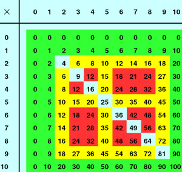
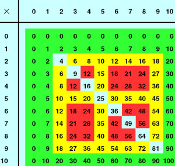
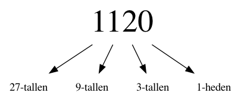
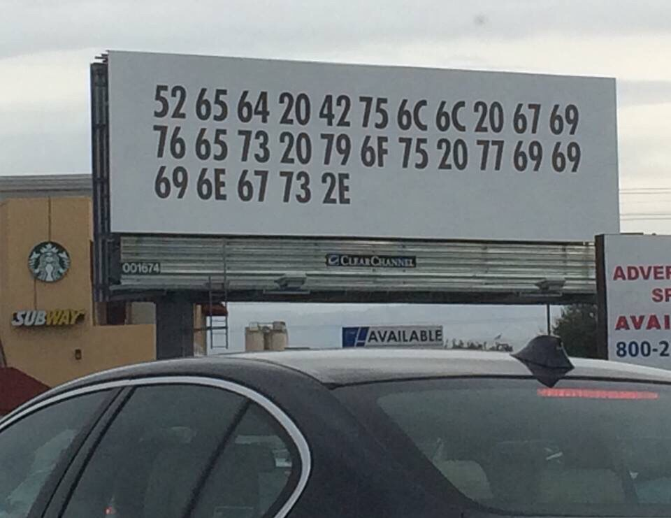
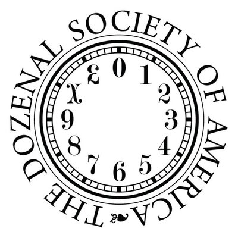
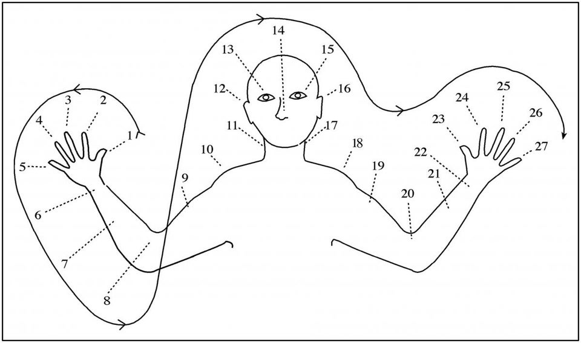

Waar staan we nu?
Contents
Waar staan we nu?#
We bouwen nu programma’s op door middel van compositie
Hierdoor worden onze programma’s steeds krachtiger

Dit heet software-architectuur
Maar hoe is dit fysiek geïmplementeerd?#

We kijken nu naar hoe de computer dingen representeert
Dit heet computer-architectuur
Hoe zijn gegevens opgeslagen?#

Dezelfde bits kunnen een andere waarde representeren, afhankelijk van het type!

8 bits = 1 byte = 1 plaats in het geheugen
Beide geheugenplaatsen bevatten dezelfde bits
Wat is 42 eigenlijk?#

Tientallig stelsel#


Het verschil tussen semantiek en syntax#
Semantiek (of waarde)#

Syntax#

Wat als we de syntax veranderen?#
Semantiek (of waarde)#
Syntax#


Tientallig stelsel (decimaal)#
Grondtal 10
Tweetallig stelsel (binair)#

Grondtal 2
Elke kolom naar links is de volgende macht van het grondtal (dus steeds keer het grondtal)
Decimaal#
Binair#

Quiz#
Converteer het binaire getal 110011 naar decimaal
Converteer het binaire getal 10001000 naar decimaal
Converteer het decimale getal 28 naar binair
Converteer het decimale getal 101 naar binair
Rekenen met talstelsels#
Hoe werkt rekenen eigenlijk?
We bekijken twee bewerkingen: optellen en vermenigvuldigen
Tientallig rekenen#
 

We gebruiken opzoektabellen om de berekeningen voor 1 cijfer te kunnen doen, en algoritmes voor langere getallen
Optellen#
Welk algoritme gebruiken we voor optellen?
Vermenigvuldigen#
Welk algoritme gebruiken we voor vermenigvuldigen?
Tweetallig rekenen#
+ |
0 |
1 |
|---|---|---|
0 |
||
1 |
× |
0 |
1 |
|---|---|---|
0 |
||
1 |
Dezelfde aanpak, allen zijn de tabellen wat kleiner! 🥳
Welke getallen komen in de tabel te staan?
Tweetallig rekenen#
+ |
0 |
1 |
|---|---|---|
0 |
0 |
1 |
1 |
1 |
10 |
× |
0 |
1 |
|---|---|---|
0 |
0 |
0 |
1 |
0 |
1 |
Die 10 is binair, lees dus 2 decimaal!
Quiz#
Tel de binaire getallen 101101 en 1110 op zonder ze om te rekenen naar decimaal
Quiz#
Vermenigvuldig de binaire getalen 101101 en 1110 zonder ze om te rekenen naar decimaal
Verder dan binair!#
Grondtal |
Stelsel |
42! |
Cijfers |
|---|---|---|---|
2 |
Binair |
101010 |
0, 1 |
3 |
Ternair |
1120 |
0, 1, 2 |
10 |
Decimaal |
42 |
0, 1, 2, 3, 4, 5, 6, 7, 8, 9 |
Waarom 1120?#


Quiz#
Welke van deze getallen is niet 42?
222
60
54
46
39
Quiz#
54 is geen 42 😞
42 and beyond!#
Grondtal |
Stelsel |
42! |
Cijfers |
|---|---|---|---|
2 |
Binair |
101010 |
0, 1 |
3 |
Ternair |
1120 |
0, 1, 2 |
4 |
Quaternair |
222 |
0, 1, 2, 3 |
5 |
Quinair |
132 |
0, 1, 2, 3, 4 |
6 |
Senair |
110 |
0, 1, 2, 3, 4, 5 |
7 |
Septenair |
60 |
0, 1, 2, 3, 4, 5, 6 |
8 |
Octaal |
52 |
0, 1, 2, 3, 4, 5, 6, 7 |
9 |
Novenair |
46 |
0, 1, 2, 3, 4, 5, 6, 7, 8 |
10 |
Decimaal |
42 |
0, 1, 2, 3, 4, 5, 6, 7, 8, 9 |
11 |
Undecimaal |
39 |
0, 1, 2, 3, 4, 5, 6, 7, 8, 9, A |
12 |
Duodecimaal |
36 |
0, 1, 2, 3, 4, 5, 6, 7, 8, 9, A, B |
16 |
Hexadecimaal |
2A |
0, 1, 2, 3, 4, 5, 6, 7, 8, 9, A, B, C, D, E, F |

52 65 64 20 42 75 6C 6C 20 67 69
76 65 73 20 79 6F 75 20 77 69 69
69 6E 67 73 2E
Hexadecimale getallen
Representeren tekens uit de ASCII-set
Red Bull gives you wiiings.

De Dozenal Society promoot een 12-tallig (duodecimaal) stelsel.
Waar komt het 12-tallig stelsel nog meer voor?
Denk bijvoorbeeld aan het aantal uren in een dag, of de eenheden in het Engelse stelsel (12 inch in een foot).

Babylonische kleitabletten (cuneiform) met een 60-tallig (sexagesimaal) stelsel.
Waar zie je tegenwoordig nog een 60-tallig stelsel?
Denk bijvoorbeeld aan het aantal minuten in een uur.
De Maya’s gebruikten een 20-tallig (vigesimaal) stelsel.

De Telefol uit Papua Nieuw Guinea gebruiken een 27-tallig (heptavigesimaal) stelsel (!)